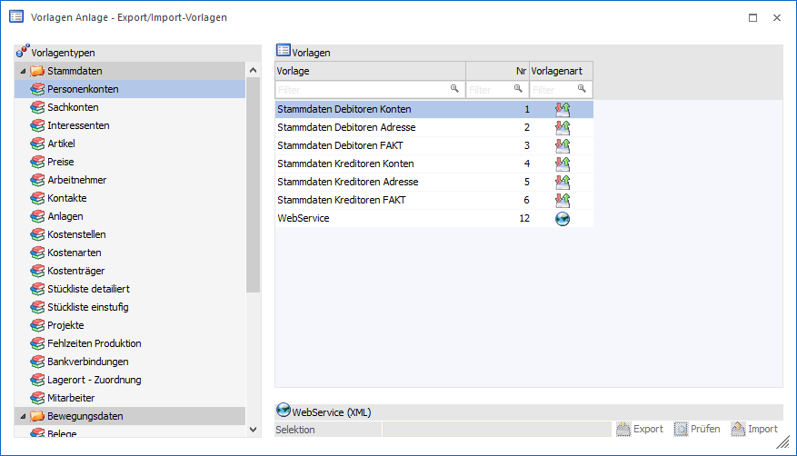
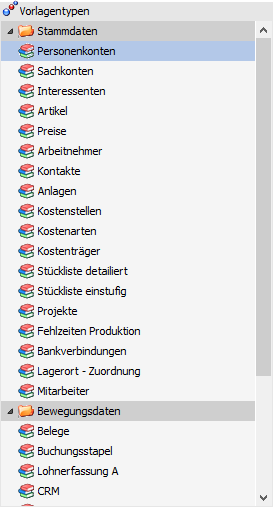
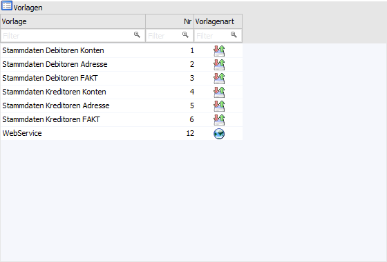
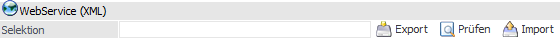

Wenn der Menüpunkt "Export-/Import-Vorlagen" geöffnet wird, so kann zunächst die zu bearbeitende Vorlage ausgewählt bzw. der Typ der neuanzulegenden Vorlage bestimmt werden.
Hinweis
Die Definition der Vorlage als solches wird in dem Kapitel Vorlagendefinition - Export-/Import-Formulare detailliert erläutert.

Vorlagentyp

Zuerst muss ausgewählt werden, welcher Vorlagentyp bearbeitet werden soll. Dabei wird zwischen den Vorlagen für "Stammdaten" und "Bewegungsdaten" unterschieden.
Ø Stammdaten
ü Personenkonten
ü Sachkonten
ü Interessenten
ü Artikel
ü Preise
ü Arbeitnehmer
ü Kontakte
ü Anlagen
ü Kostenstellen
ü Kostenarten
ü Kostenträger
ü Stückliste detailliert
ü Stückliste einstufig
ü Projekte
ü Fehlzeiten Produktion
ü Bankverbindungen
ü Lagerort - Zuordnung
ü Mitarbeiter
Hinweise zum Vorlagentyp "Mitarbeiter"
In der Vorlagendefinition wird anstelle von "AN-Nummer" die Bezeichnung "Mitarbeiter-Nummer" verwendet und anstelle von "AN-Key" die Bezeichnung "Mitarbeiter-Key".
Die Benennung der anderen Felder erfolgt wie in den Arbeitnehmer-Vorlagen. Die Vorlagen sind dazu im Ribbon der Vorlagen-Anlage zu aktualisieren.
Hinweis zum Vorlagentyp "Mitarbeiter" für Mandanten aus Österreich
Beim Import eines Arbeitnehmers wird geprüft, ob es bereits einen Mitarbeiter mit der verwendeten Nummer gibt bzw. wird beim Import eines Mitarbeiters geprüft, ob es bereits einen Arbeitnehmer mit der verwendeten Nummer gibt. In den beiden aufgeführten Fällen wird dann nicht importiert, sondern es wird eine entsprechende Meldung angezeigt.
Ø Bewegungsdaten
ü Belege
ü Buchungsstapel
ü Lohnerfassung A
ü CRM
ü Projekterfassung
ü Fehlzeitenerfassung A
ü Kostenrechnung
ü Lagerbuchung
ü Kommissionierung
ü Produktionsauftrag
ü Inventur
ü PPS Zeiten
Hinweis zum Vorlagentyp "CRM" und "Projekterfassung"
Das enthaltene Feld "Arbeitnehmer" wurde mit dem Wechsel zur WinLine Version 11 auf "Mitarbeiter" umbenannt. Wenn der Feldname in der Vorlage nicht geändert wurde, wird auch in bestehenden Vorlagen die neue Bezeichnung verwendet. Die Vorlagen sind dazu im Ribbon der Vorlagen-Anlage zu aktualisieren.
Tabelle "Vorlagen"

In der Vorlagentabelle werden alle Vorlagen des ausgewählten Typs angezeigt.
Ø Vorlage
Hier wird der Name der Vorlage angezeigt.
Ø Nr
In dieser Spalte wird die interne Vorlagennummer angezeigt.
Ø Vorlagenart
In dieser Spalte wird angezeigt, um welche Art von Vorlage es sich handelt. Dabei gibt es 2 Unterscheidungen:
ü - Export-/Import Vorlagen
Wird in
der Spalte diese Grafik angezeigt, dann handelt es sich bei der Vorlage um eine
Export-/Import-Vorlage.
ü - Export-/Import Vorlagen mit
Webservice
Wird in der Spalte diese Grafik angezeigt, dann handelt es sich um
eine Export-/Import-Vorlage, welche auch für den Bereich "Webservice" zur
Verfügung stehen.
WebService(XML)

Handelt es sich um eine Vorlage mit WebService, so wird der Bereich "WebService (XML)" freigeschaltet. Über diesen kann die Webservice Vorlage getestet werden.
Ø Selektion
Über das Eingabefeld werden die Parameter für die Daten-Selektion bei einem Export definiert (mit welchem Datensatz getestet werden soll). Folgende Parameter stehen zu Verfügung:
ü Datensatz
Es wird der zu
exportierende Datensatz (z.B. eine Kontonummer oder eine Artikelnummer -
abhängig vom Vorlagentyp) hinterlegt (Syntax => Datensatz).
Beispiel
Es soll das Personenkonto "230A001" exportiert werden. Hierfür muss im Feld "Selektion" nur die Kontonummer 230A001 hinterlegt werden.
ü Mehrere Datensätze
Es werden
die zu exportierende Datensätze (z.B. eine Kontonummer oder eine Artikelnummer
- abhängig vom Vorlagentyp) hinterlegt. Diese müssen mit einem Komma
getrennt werden und die Nummern sind in einfache Anführungsstriche zu setzen
(Syntax=> 'Datensatz', 'Datensatz').
Beispiel
Es sollen die Personenkonten "230A001", "230B002" und "230C005" exportiert werden. Hierfür muss im Feld "Selektion" die Hinterlegung mit '230A001', '230B002', '230C005' erfolgen.
ü Filter
Es wird ein Filter für
die Selektion verwendet (Syntax => FilterFiltername). Hierfür
muss der Filter für den entsprechenden Vorlagentyp zunächst im EXIM (WinLine
START - Vorlagen - EXIM) angelegt werden.
Beispiel
Es wurde für den Typ "Personenkonten" ein Filter mit dem Namen "TopKunden" angelegt. Durch die Eingabe FilterTopKunden wird der Filter bei dem Export verwendet.
ü Zählliste
Für den Export von
Inventurdaten (Typ "Inventur") steht die Möglichkeit zur Verfügung auf
Zähllisten zuzugreifen, welche zuvor in dem Programm "Zähllisten - Definition"
(WinLine FAKT - Erfassen - Inventur) angelegt wurde (Syntax =>
ZaehllisteZähllistennummer).
Beispiel
Es wurde eine Zählliste mit dem Namen "Schnelldreher" angelegt. Durch die Eingabe ZaehllisteSchnelldreher wird die Zählliste bei dem Export verwendet.
Achtung
In der entstehenden XML-Datei wird genutzte Zählliste automatisch als Attribut hinterlegt.
ü Buchungsnummer
Sofern der
Export eine Selektion auf die Buchungsnummer unterstützt, so kann diese direkt
oder mit einem "von / bis"-Bereich angegeben werden (Syntax =>
JNummer oder
JvonNummer-bisNummer).
Beispiel
Es sollen die Buchungsnummern "100" bis "150" des Artikeljournals (Typ "Lagerbuchung") ausgegeben werden. Hierfür muss im Feld "Selektion" die Hinterlegung mit J100-150 erfolgen.
ü Periode
Sofern der Export eine
Selektion auf die Periode unterstützt, so kann diese direkt oder mit einem "von
/ bis"-Bereich angegeben werden (Syntax => PPeriode oder
PvonPeriode-bisPeriode).
Beispiel
Es sollen die FIBU-Buchungen der Perioden 3 und 4 (Typ "Buchungsstapel") ausgegeben werden. Hierfür muss im Feld "Selektion" die Hinterlegung mit P3-4 erfolgen.
Achtung
Eine komplette Übersicht aller Selektionsmöglichkeiten kann der WinLine WebService-Dokumentation entnommen werden.
Ø Export
Durch Anwahl dieses Buttons wird gemäß Selektion ein Webservice-Export gestartet. Die zurückgelieferte XML-Datei wird im Standardprogramm für XML-Dateien angezeigt und im Verzeichnis "MESOWebservice" des WinLine-Ordner abgelegt. Der Name der Datei lautet MESOVorlagentypVorlagennameSelektion.xml (z.B. MESOInventurErfassungsdatenZaehllisteSchnelldreher.xml).
Ø Prüfen
Durch Anklicken des Buttons "Prüfen" kann eine XML-Datei auf ihre Richtigkeit geprüft werden. Zuerst muss über den Öffnen-Dialog eine XML-Datei gewählt werden, welche der ausgewählten Vorlage entspricht.
Nach der Auswahl der Datei im Öffnen-Dialog erfolgt dann die Prüfung, wobei das Prüfergebnis sofort am Bildschirm angezeigt wird (im Standardprogramm für XML-Dateien). Zusätzlich wird im WinLine-Unterverzeichnis "MESOWebservice" eine XML-Datei mit der Bezeichnung "MESOVorlagentypVorlagennameDatumTUhrzeit.xml" (z.B. MESOResultBuchungsstapelStapel2021-09-04T12-03-44.xml) angelegt, welche auch das Prüfergebnis beinhaltet.
Ø Import
Durch Anklicken des Buttons "Import" kann eine XML-Datei direkt importiert werden. Zuerst muss über den Öffnen-Dialog eine XML-Datei gewählt werden, welche der ausgewählten Vorlage entspricht.
Nach der Auswahl der Datei im Öffnen-Dialog erfolgt dann die Übernahme, wobei das Ergebnis (erfolgreicher Import oder Fehlermeldung) sofort am Bildschirm angezeigt wird (im Standardprogramm für XML-Dateien). Zusätzlich wird im Unterverzeichnis "MESOWebservice" eine XML-Datei mit der Bezeichnung "MESOVorlagentypVorlagennameDatumTUhrzeit.xml" (z.B. MESOResultBuchungsstapelStapel2021-09-04T13-15-10.xml) angelegt, welche auch das Importergebnis beinhaltet. Des Weiteren wird bei diesem Schritt ein Eintrag ins "WebService-Protokoll" vorgenommen.